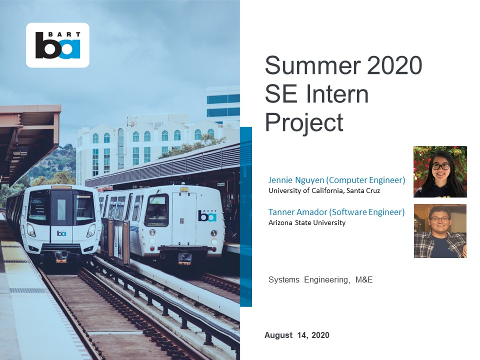
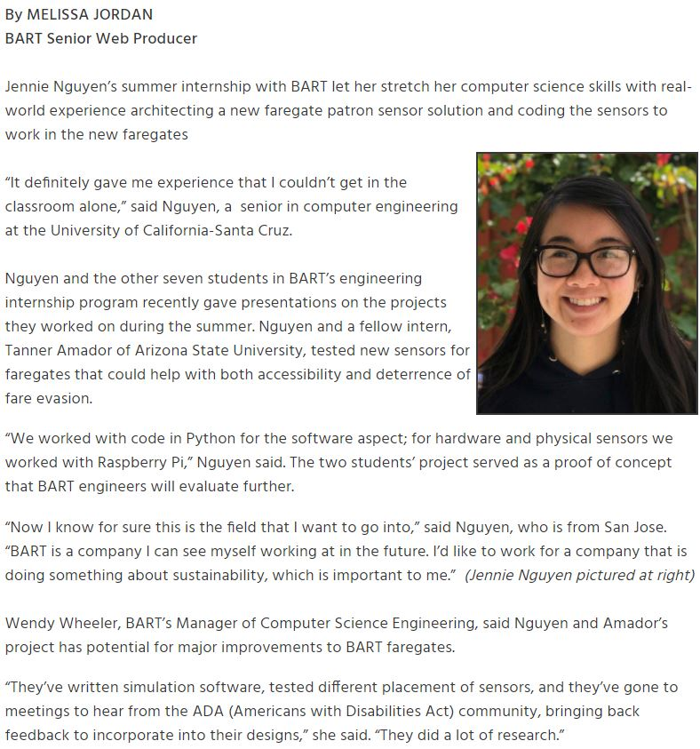

See the whole presentation here.
Disclaimer: This page does not go into too much detail about the technology behind BART's current fare gates for privacy and security reasons.
Summary
At BART, I worked as a systems engineering intern with the Fare Collection Engineering (FCE) team, the Maintenance & Engineering (M&E) division that is responsible for systems related to fare collection and ticketing. I also worked with engineers in Computer Systems Engineering (CSE), the division responsible for production computer systems. FCE and CSE are both part of the Systems Engineering department of M&E. I was very excited and am still really grateful for the opportunity to work on a project that has real-world applications, could help so many people, and was similar to my capstone project which also involved sensors for public transportation purposes. I also felt the role and project really fit me as a computer engineering student with a focus on computer systems because I was able to utilize my education and knowledge in both software and hardware, as well as work with unfamiliar things and learn from them.
Below is additional information on my project from an article on BART's website.

Read more from this article on BART's website here.
Sensor Project
My project for the summer was to research and test sensors that could be used in the next version of the fare gates. The new fare gates aim to reduce fare evasion, help modernize the stations, and be more user friendly to the patrons that use them. The new sensors would be used to make progress on meeting all of these goals by better detecting people and their belongings in the aisle while bringing in new technology. Read more about recent fare gate modifications and fare evasion plans on BART's website.
My team worked on many aspects of project planning, including research, procurement, testing, and documenting. The research I conducted involved reading documentation about BART's current fare gates and their sensors, reviewing last year's intern's report and code, and analyzing new sensors that meet the requirements and could be used. I compiled the research into a summary and pro/con list of each sensor, a matrix of sensor requirements and specifications, and a Bill of Materials for the sensors that were chosen. Being able to participate in meetings with project managers, stakeholders, and consultants helped me to revise these files.
Technologies Used
After researching, attending meetings with stakeholders, and understanding the (customer and engineering) requirements better, my team chose ultrasonic, infrared, and thermal sensors to purchase and test. LIDAR and pressure mat sensors were researched and considered as well. I also worked with the Raspberry Pi 3B+ and wrote the sensor code in python. I2C and UART were the serial communication protocols used to transmit data from the sensors to the pi.
Moving Forward
The FCE team at BART will be able to use the code and research from this summer to give them a better idea of what sensors they would like to utilize as they continue improving and working on the safest, quickest, and most modern version of the fare gates yet. I'm excited to see the new technology at BART stations in the next few years!